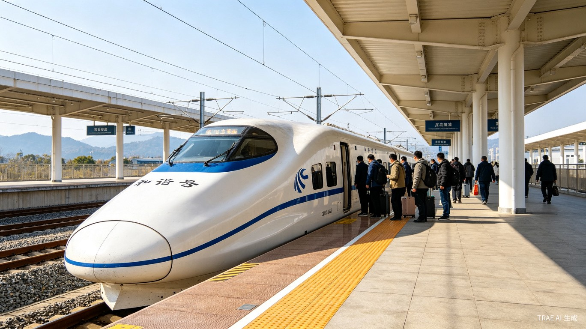
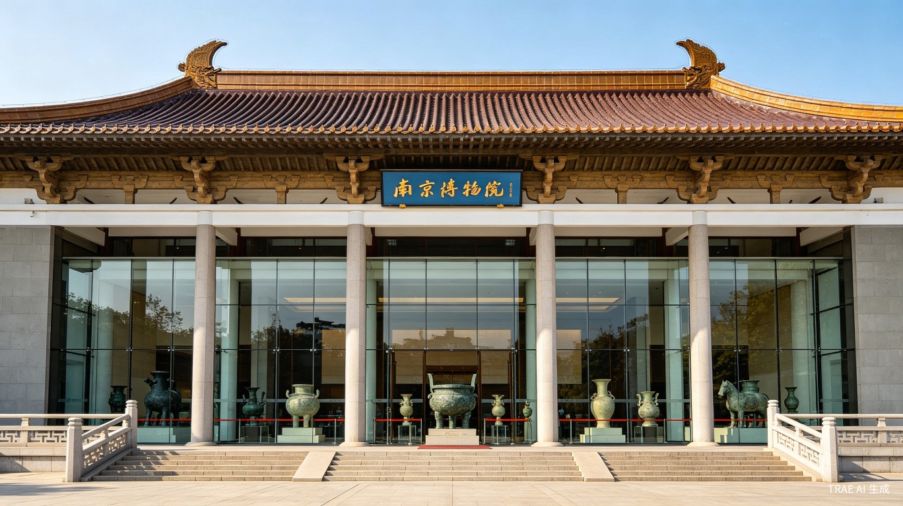
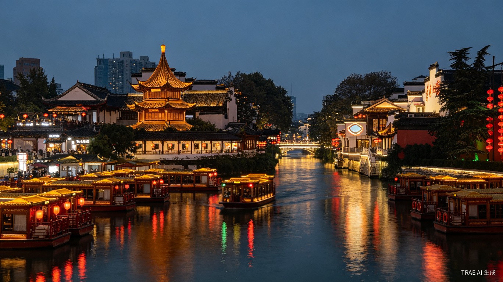
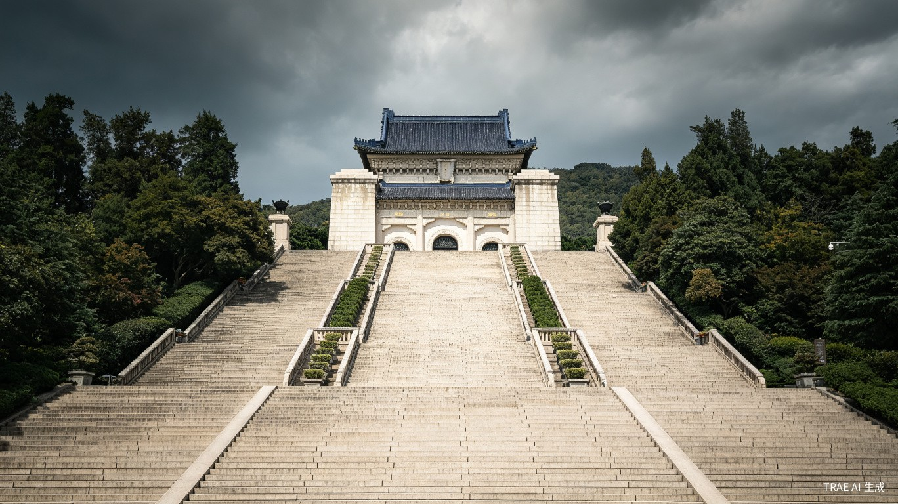
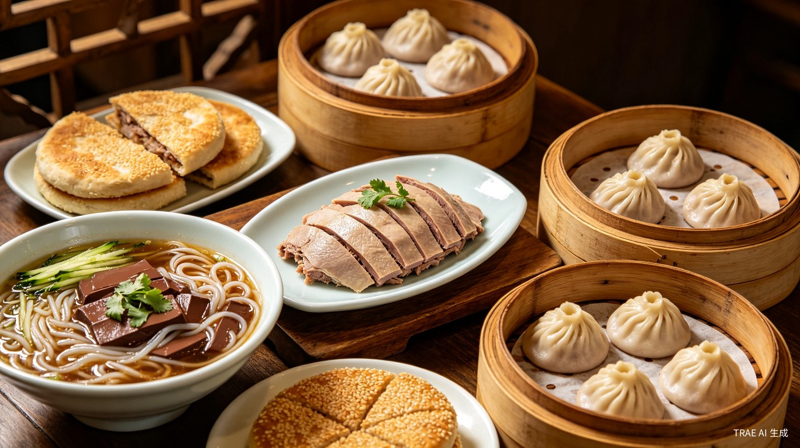
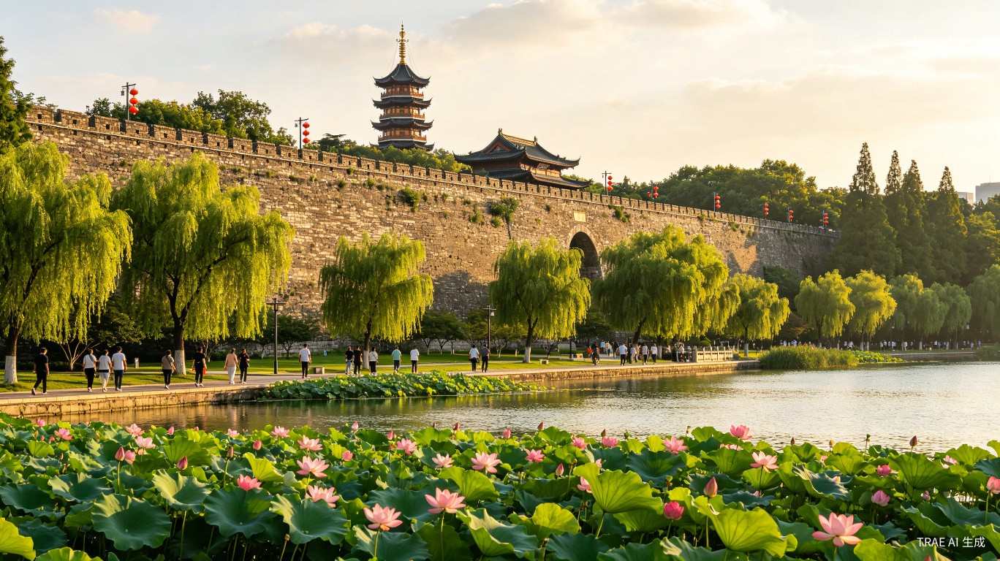
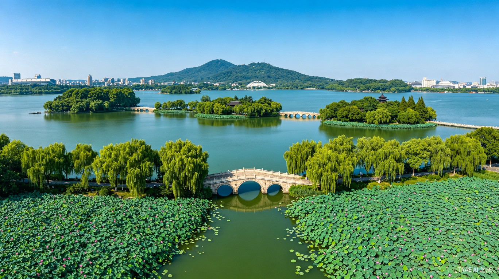
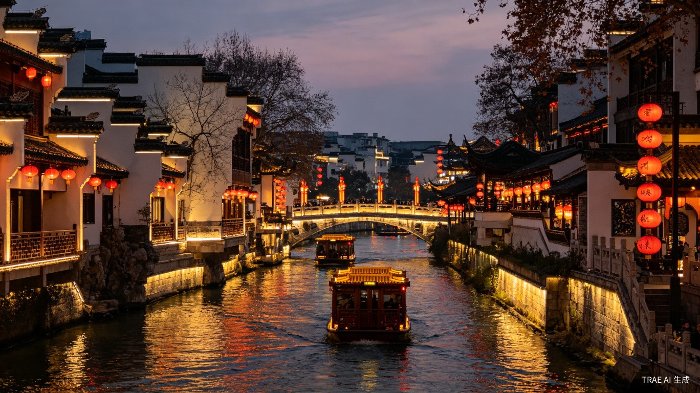
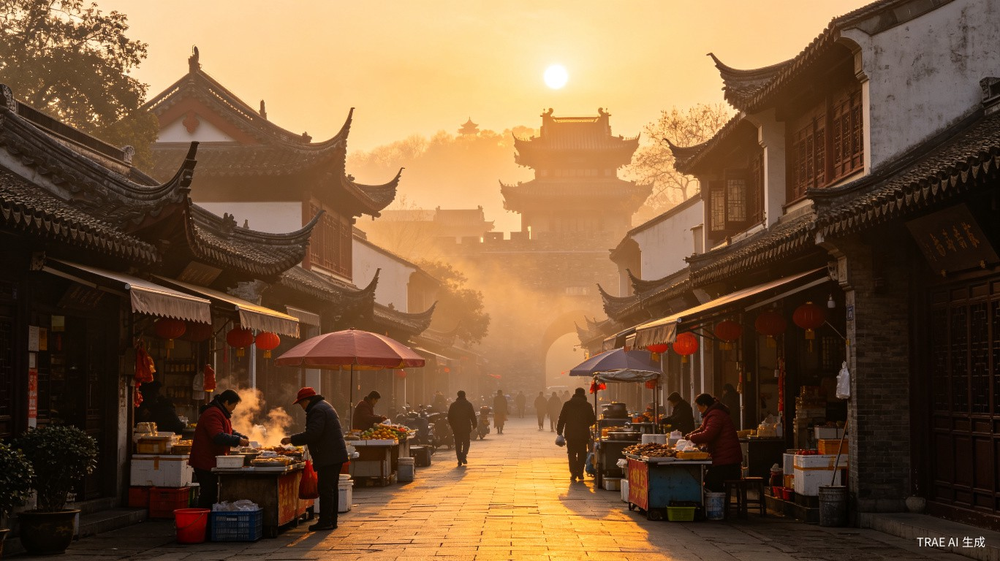
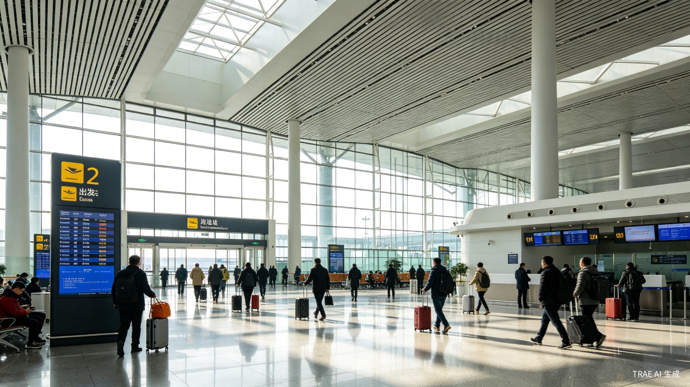

Ancient capital of six Chinese dynasties, where serene lakes, historic city walls, and timeless river scenery create an atmosphere of enduring elegance.
From Shanghai's modernity to the ancient soul of the south.

China's high-speed train network is the world's largest and most advanced. The Shanghai-Nanjing route covers 300 kilometers at speeds up to 350 km/h, passing through the Yangtze River Delta's patchwork of rice paddies and water towns.
Settle into your comfortable reserved seats and enjoy the smooth, quiet ride. Large windows offer views of the countryside. The train is family-friendly with clean restrooms and food trolleys. Kids will be amazed by the speed display. The journey takes just 90 minutes — perfect for a relaxed morning transit.

One of China's largest museums with over 430,000 artifacts spanning millennia. Housed in a magnificent building blending traditional and modern architecture, highlights include Ming Dynasty porcelain, ancient bronze vessels, and a Republic of China Gallery.
Start with the Republic of China Gallery for a vivid look at Nanjing's modern history. Don't miss the underground "Republic Street" replica that recreates 1930s Nanjing with shops and period details kids find fascinating. Free admission but bring your passport for entry. Allow 2-3 hours for a comfortable family visit.

Originally built in 1034 AD, the Confucius Temple honors China's greatest philosopher and has been a center of learning for nearly a millennium. The Qinhuai River flowing alongside is lined with traditional whitewashed buildings and stone bridges.
Visit the temple complex and browse the surrounding market streets for souvenirs and snacks. Take a traditional painted boat ride along the Qinhuai River at night — the reflection of red lanterns on the water is magical. The boat ride lasts about 30-40 minutes and is suitable for all ages. Allow 2-3 hours for the full experience.
Pay tribute to a founding father amid the natural beauty of Purple Mountain.

The memorial hall of Dr. Sun Yat-sen, founding father of modern China. Set against the forested slopes of Purple Mountain, the complex combines traditional Chinese architecture with modern design, featuring 392 steps leading to the memorial hall.
Climb the 392 steps at a leisurely pace — take breaks at the landing platforms. The view from the top is spectacular, overlooking the tree-covered mountain. Visit the beautiful Music Stage nearby, surrounded by pine trees. The surrounding scenic area has peaceful forest paths. Wear comfortable shoes and bring water. Allow 2-3 hours.

Nanjing's cuisine reflects its position between north and south China. Local specialties include salted duck (a tradition since the Ming Dynasty), duck blood vermicelli soup, and sesame pancakes — unique flavors you won't find elsewhere.
Head to the food streets around Shiziqiao for authentic local flavors. Try the famous salted duck — it's mild and tender, great for families. Duck blood vermicelli soup sounds adventurous but tastes delicious. Grab sesame pancakes for a quick snack. Enjoy a relaxed evening exploring at your own pace. Allow 1-2 hours for dinner and strolling.
Walk ancient walls and stroll beside one of China's most beautiful city lakes.

Built between 1366 and 1386, this is the longest and best-preserved city wall ever constructed in China, stretching 35.3 kilometers. The ancient bricks, many bearing the names of their makers, represent the pinnacle of Ming Dynasty military engineering.
Walk along the ramparts from Xuanwu Gate for spectacular views over Xuanwu Lake and the city skyline. Look for the inscriptions on the ancient bricks — a fascinating detail for history-loving families. The wall is wide and safe for children. Best visited in the morning for cooler temperatures and better photos. Allow 1-2 hours.

A royal garden since the Three Kingdoms period over 1,700 years ago, this expansive lake features five islands connected by bridges, with lotus ponds, willow-lined paths, and traditional pavilions.
Rent a paddle boat for a fun family activity on the lake — kids especially love it. Walk the willow-lined paths and cross the bridges between islands. Watch locals practice tai chi and play chess in the pavilions. In spring, cherry blossoms transform the lake into a pink wonderland. Flat paths are stroller-friendly. Allow 2-3 hours for a relaxed visit.

Your final evening in Nanjing offers a chance to reflect on the journey. The Qinhuai River area at night is especially beautiful, with lantern-lit streets and a peaceful atmosphere.
Enjoy a relaxed dinner at a local restaurant — try any dishes you may have missed. Take a last stroll along the Qinhuai River if time permits. Back at the hotel, organize luggage and prepare for tomorrow's departure. It's a good idea to set aside essentials for the morning. Allow the evening to be flexible and restful.
Farewell to China, carrying memories that will last a lifetime.

Your last morning in the ancient capital of six Chinese dynasties. Nanjing has been your family's home for four days, offering a blend of history, nature, and local culture.
Enjoy a leisurely breakfast at the hotel. If time allows, take a short walk around the neighborhood for a final glimpse of local life. Double-check all belongings and check out comfortably. The private transfer will be waiting — no need to rush.

Nanjing Lukou International Airport is located 35 kilometers from the city center, serving both domestic and international flights. The journey passes through the Jiangsu countryside for final views of rural China.
Your private transfer vehicle will pick you up directly from the hotel. The drive to the airport takes about 45-60 minutes depending on traffic. Use this time to relax and enjoy the scenery. Airport check-in and security for international flights typically require 2-3 hours, so plan accordingly.
Your return flight from Nanjing to the UAE marks the end of a 10-day family adventure across three of China's most remarkable cities — from imperial Beijing to modern Shanghai and historic Nanjing.
Complete check-in and security procedures at the airport. Browse the duty-free shops for last-minute souvenirs. On the flight, look back through your photos and share favorite moments with the family. The memories of the Forbidden City, Great Wall, the Bund, and Qinhuai River will stay with you for years to come.
Thank you for traveling with Arabian Horizon Travel. We hope your family has created memories to cherish for generations.
Explore each city again or share this itinerary with friends.